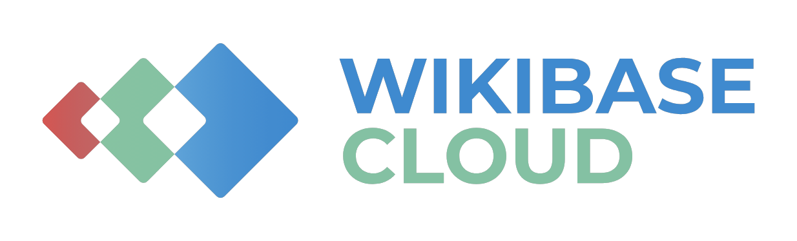
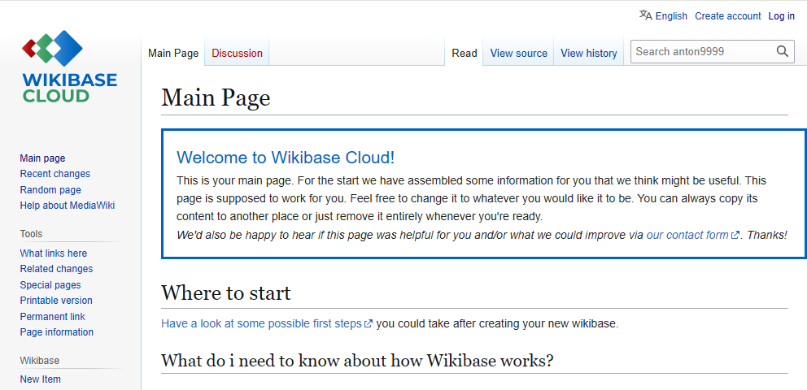

Profile
Settings
Features
Status: Published
Site Name: anton12
Domain: anton12.wikibase.cloud
Date Created: 2025-09-30
Database Version: 1.43.0
Is the data in this Wikibase intended for reuse by other people?*
Wikibase serves different use cases: from sharing data that anyone can rely on to get insights and build useful applications, to data staging and experimentation in an isolated sandbox. As people explore the Wikibase ecosystem, we want to make it easier for them to identify and discover datasets that are actually meant for reuse by audiences beyond their contributing community, taken care of and unlikely to disappear unexpectedly.
Choose the option that best describes the data in this Wikibase.
Display the intended-use status to visitors of this Wikibase?*
This choice controls how your Wikibase is presented to visitors. If yes, the intended-use status is shown as a banner at the top of each page and as a label in the footer. If no, the status remains internal and is not shown to visitors.
Licensing rules control the licensing statements shown in your wiki's footer, in add/edit dialogs, and in API and RDF responses. Configured separately.
Banner

Footer